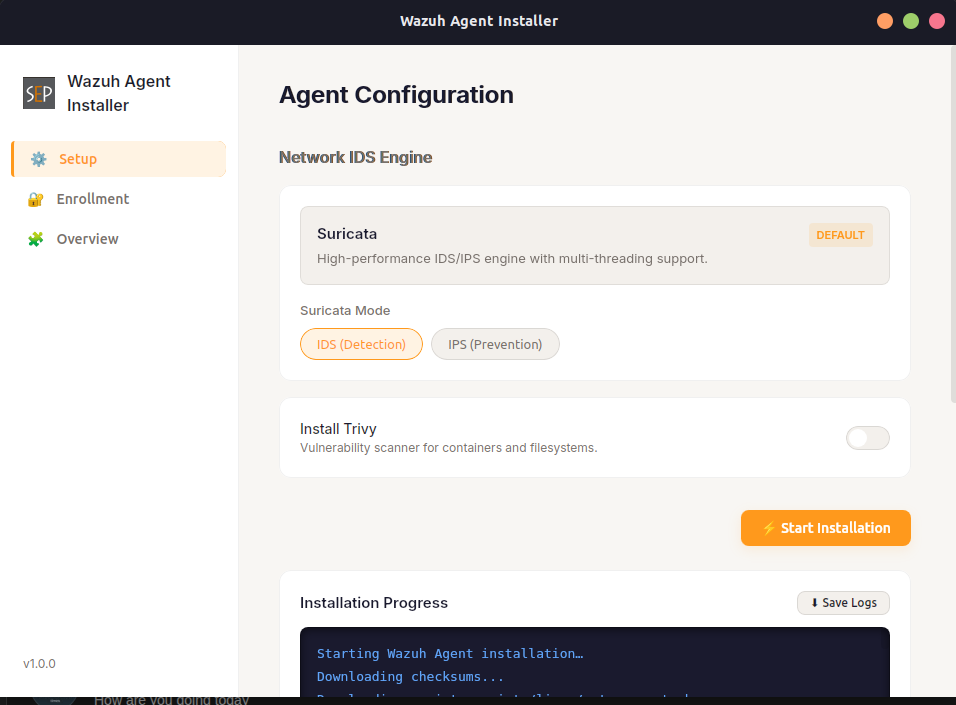
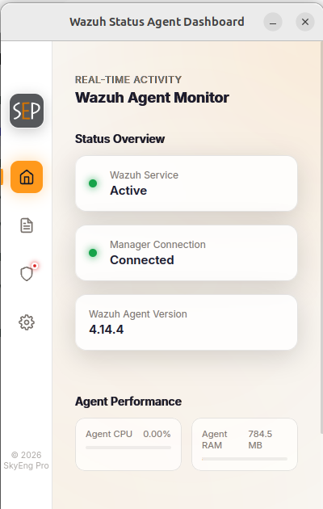

Modern organizations rely entirely on digital infrastructure databases, web services, and user communications. Protecting these digital assets is no longer just an IT concern; it is a fundamental business priority.
As business systems grow more complex, security threats become more sophisticated. Without continuous monitoring, a single vulnerability can disrupt business operations and compromise sensitive customer data.
"A company in Yaoundé is operating normally, completely unaware..."
An employee clicks a fake invoice link from a known supplier in Douala, unknowingly installing a silent virus.
For weeks, hackers explore the network and steal files. Nobody suspects anything because systems work normally.
"...until they discover too late that they have been hacked."
Suddenly, all files are locked with a red screen demanding money. Systems are down, and no one knows how it started.
Robust defense requires two synchronized pillars: real-time analysis technology and a professional response team.
(Security Information & Event Management)
A specialized platform that continuously aggregates, processes, and correlates event logs from across your entire infrastructure to immediately flag security incidents.
(Security Operations Center)
The specialized team of cybersecurity analysts who monitor the SIEM alerts 24/7, investigate suspicious activities, and coordinate incident response.
The Unified Security Monitoring and Threat Detection Platform
Centralized Visibility
Collects and archives system, application, and security logs across the enterprise.
Real-Time Alerts
Detects intrusions, brute-force attempts, and unauthorized system access instantly.
Proactive Hardening
Scans systems to locate vulnerable software, misconfigurations, and system exposure.
Configuration Guard
Monitors changes in system files and registry keys to flag unauthorized modifications.
Standards Audit
Automates compliance reporting for major standards like PCI DSS, GDPR, and HIPAA.
Immediate Mitigation
Automatically blocks malicious IPs or isolates infected endpoints to prevent spread.
Integrating Specialized Technologies under One Command
Monitors network traffic, inspecting packets for signs of scan activities, exploits, and lateral movement attempts.
Scans files and memory, identifying and classifying malicious binary files using custom, rule-based matching.
Acts as the central correlation hub, consolidating indicators from host, network, malware, and forensic engines.
How Data Flows from Detection to Mitigation
Endpoints(laptops, servers...) and network traffic generate data
Snort, Suricata, and Wazuh agent collect logs
Correlates logs and generates alerts
Security team resolves and closes threat
Delivering Maximum Value for Your Money
As an open-source platform, Wazuh eliminates license-per-agent structures, lowering Total Cost of Ownership (TCO) and enabling security budgets to focus on operations.
Whether you have a single small office or multiple branches across the country, our solution easily expands to protect everything smoothly and reliably.
Connects natively with major cloud environments (AWS, Azure, GCP), firewalls, email services, and messaging gateways to leverage existing systems.
A lightweight program installed on each device. Deployable in a few clicks via our custom setup tool, with a built-in status app so admins can monitor agent health at a glance


See the Wazuh Security Stack in action
Demonstrate detection of modifications to monitored files.
Demonstrate YARA detecting a suspicious file and generating an alert.
Demonstrate an Nmap scan detected and generating an alert.
Demonstrate multiple failed logins and alert generation.
Verify everything is ready before running the demo
Troubleshoot: If endpoint does not appear, restart agent → refresh dashboard → search by hostname.
Detecting unauthorized changes to critical system files
Goal: Show that Wazuh detects file changes in real time.
We simulate a rogue insider or attacker altering a critical security file. Wazuh detects the unauthorized change instantly, ensuring no configuration tamper goes unnoticed.
Wazuh detects malware the moment it lands on the endpoint
A simulated malicious file is dropped onto the server or a user machine. Wazuh immediately spots the new file and scans it, intercepting the threat before it can execute.
Detect network reconnaissance and port scanning
An attacker probes our network to find weak entry points. Wazuh catches this early reconnaissance, allowing us to block the attacker before they even launch a real strike.
Simulate repeated failed SSH logins from a test machine
Prerequisites: Test endpoint with SSH enabled + separate test machine in the lab.
Hackers attempt to force their way in with rapid, automated password guesses. Wazuh connects the dots across multiple failed attempts and instantly flags the brute-force attack in progress.
"Effective cybersecurity is achieved through visibility, detection, investigation, and response. Wazuh provides the foundation to build that capability."
Secure Your Organization's Infrastructure
contact@skyengpro.com